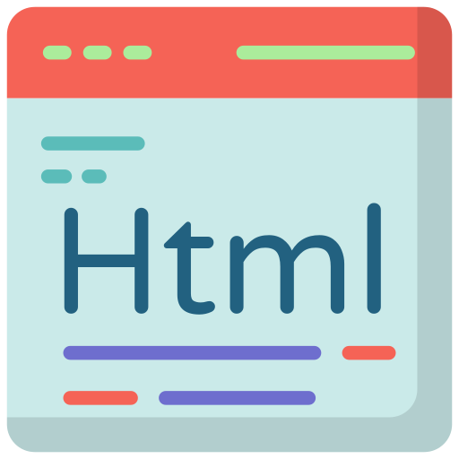
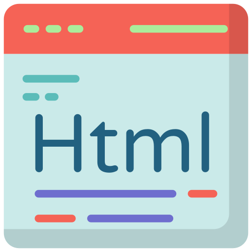
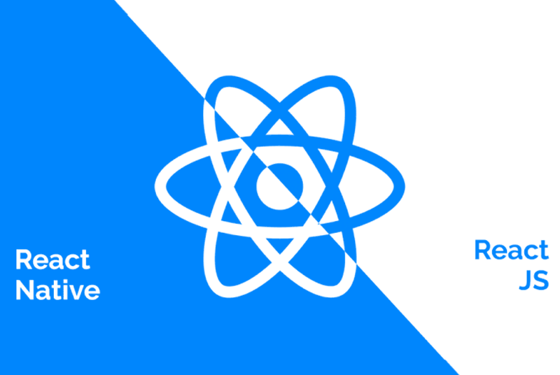
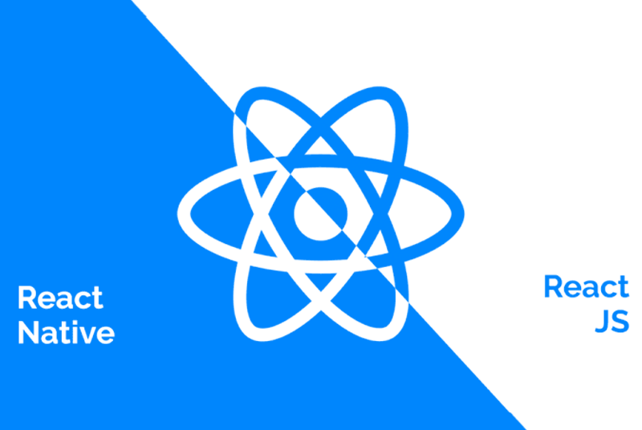
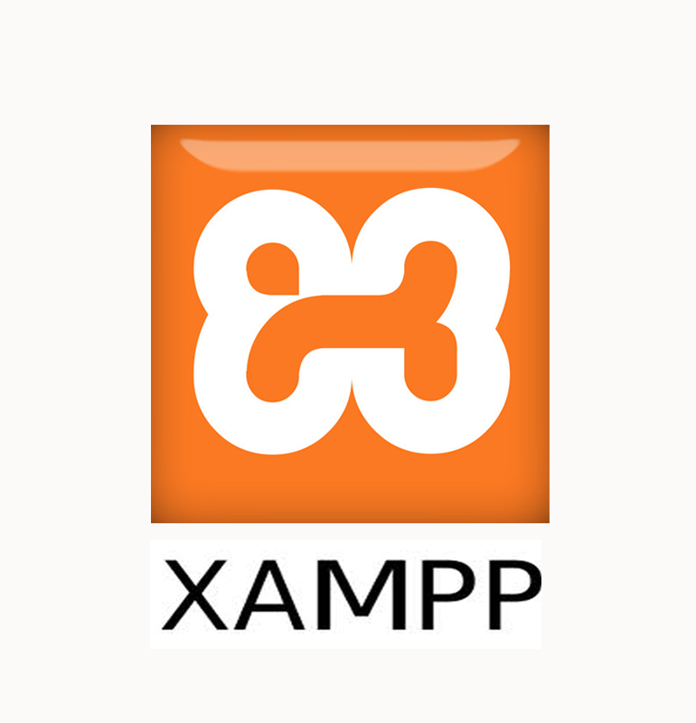
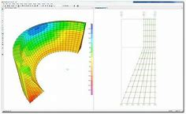
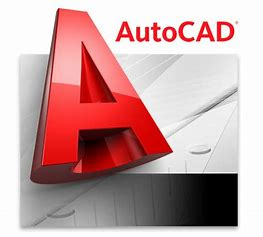
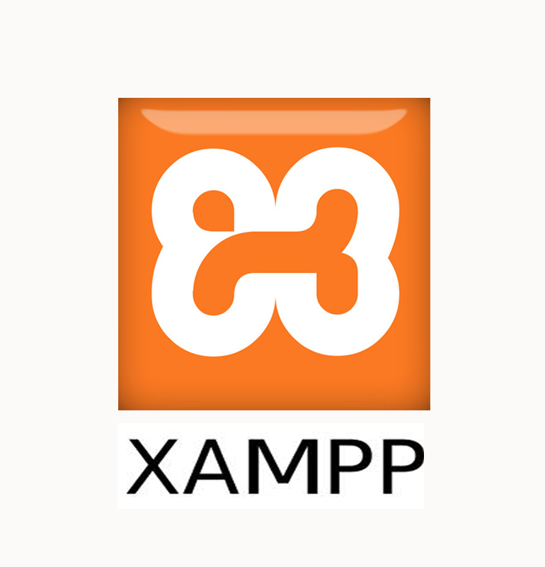
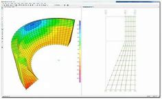
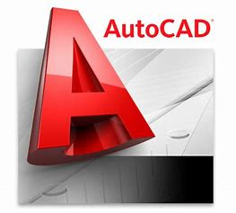

Mon nom est LE, et mon prénom est Minh Canh, j’ai 44 ans.
Je suis marié et nous avons deux enfants, j’habite à Compiègne.
J'ai obtenu mon diplôme à l’école de Polytechnique de Danang en 2004 au Vietnam,
J'ai plus de 10 ans d'expérience en tant qu'ingénieur en conception de structures,
responsable adjoint de projet de travaux dans plusieurs entreprises au Vietnam.
Je suis à la recherche d'un emploi ou d'une candidature pour un stage.
Je suis arrivé en France puis 12/2018, J'ai suivi deux formations sur développeur web et
application mobiles.
Grâce à ces formations, j'ai ajouté des compétences importantes.
Elle me permet de pouvoir poursuivre étude et travail en tant que développeur que j’aime

 



 


 




